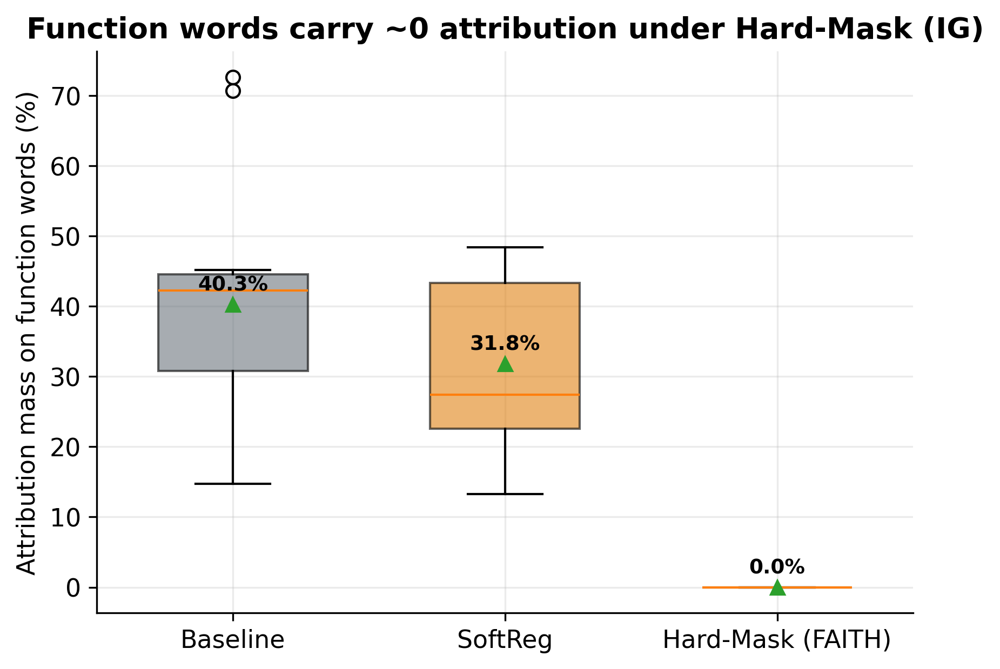
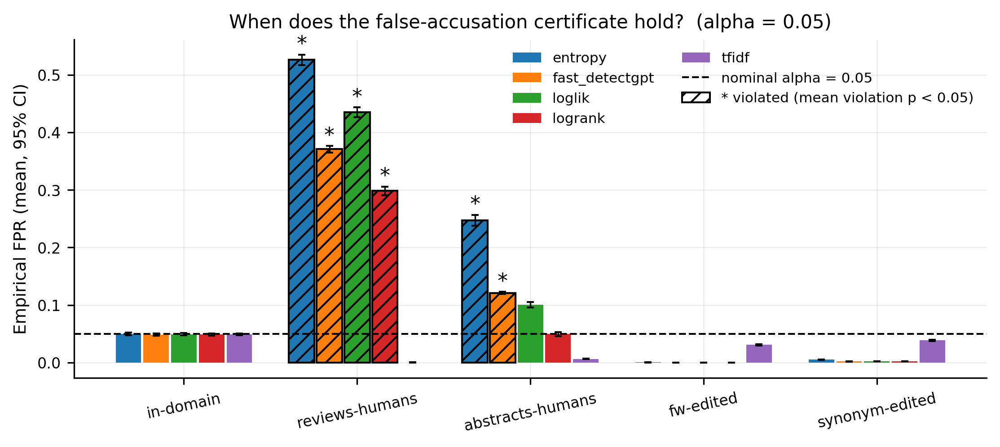

Detectors of AI-generated text are deployed to accuse people. These two studies ask what
that requires: FAITH-Detect interrogates the evidence a detector relies on,
and GUARD stress-tests the decision-level guarantee a deployer can actually certify.
0.526FPR under human population shift at α = 0.05 (GUARD)
10×violation of the certified bound
The connecting thread
From evidence quality to decision guarantees
A detection score is only the start of a forensic argument. First, the score should rest on
evidence that survives scrutiny: FAITH-Detect shows that standard detectors place roughly a
third of their attribution mass on function words (articles, prepositions, pronouns) and
characterises, across five seeds, exactly what is gained and lost by forcing a detector to
ignore them. Second, even a well-evidenced score must be turned into an accusation
responsibly: GUARD wraps any detector score in a split-conformal certificate that bounds the
false-accusation rate, then maps empirically where that certificate holds, where it breaks,
and how a deployer can tell the difference with a small pilot sample.
FAITH-Detect
What is the detector's evidence, and is it an artefact?
Function-word-invariant training as a controlled probe.
GUARD
Given any detector score, when can a deployer certify
“false-accusation rate ≤ α” — and when does that certificate silently fail?
Projects
Two studies, one deployment story
Detection + Explainability
FAITH-Detect
Should a detector ignore function words? A function-word-invariant
(Hard-Mask) detector keeps in-domain accuracy, becomes provably insensitive to
function-word attacks, and pays a measurable out-of-domain price — a characterised
trade-off, not a universal win.

Macro-F1, 5 seeds (mean): in-domain 0.936 vs 0.937 for the baseline;
function-word attack 0.958 vs 0.872; OOD reviews 0.474 vs 0.695.
Function-word attribution mass: 0.365 → 0.000.
When can you trust the certificate? Split-conformal calibration bounds the
false-accusation rate of any detector score. GUARD maps where the bound holds
(in-domain, generator shift, human-edit attacks) and where it breaks
(human population shift) — and shows the breakage is detectable.

At α = 0.05 (200 repeats): in-domain FPR 0.049–0.051 across all five scorers;
under human population shift, up to 0.526 (entropy scorer) — a 10× violation.
Mondrian calibration restores per-length validity.
Both projects evaluate on review-domain data (MAiDE-up hotel reviews; RAID multi-generator
pools) with grouped-by-entity splits to prevent leakage, and both report failure modes as
first-class results: FAITH-Detect's out-of-domain cost and GUARD's certificate breakage
under population shift are headline findings, not footnotes.